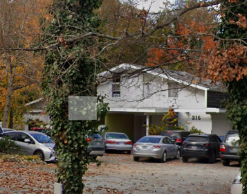
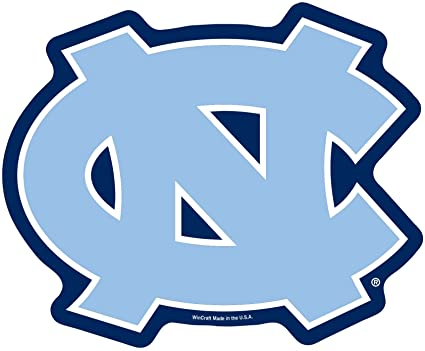

My last semester got off to an excellent start after I moved into my new place, located on McCauley Street. I quickly made some amazing friends in my new roommates, and we always had something to do at the beginning of the year. This includes going out to bars, throwing the occasional party, and playing games from soccer to die. I also met far more new people than I expected this year, which was a pleasant surprise. The best part about meeting people from new social circles was learning about their ambitions and background. It was refreshing to get a more diverse array of perspectives on life, school, whatever it may be.

A view of my new home, photo taken via Google Maps
My Schedule
As a senior, I was able to create an easier schedule for myself, only taking 12 credits. I took two challenging classes in Linear Algebra and Stochastic Modeling, while also taking more relaxed classes in Sports Analytics and Professional Writing. Interestingly enough, it was the easier classes in which I was able to produce work that I was more proud of. In my Sports Analytics class, I was able to apply statistical concepts and coding to make a predictive NFL model. My writing class allowed me to create a piece of creative nonfiction that included elements of fantasy, surrealism, biography, and drama. It was essentially a short story that incorporated accounts of real individuals. The final product really made me appreciate my own creative abilities, while becoming a much improved writer.
Here's a link to my story, Phantom Casino
Job Search
While my schedule was easier, I was still really busy due to job hunting and interview preparation. Needing a job after graduation, I spent multiple hours a week filling out job applications and studying for interviews. Fortunately, my work paid off as I received an offer that would allow me to live in Nashville before the end of the semester. I was so relieved once it happened, that the end of the semester felt a lot less stressful.

Day-To-Day
In terms of day-to-day activities, I started cooking more often thanks to not having a meal plan anymore. My favorite meals revolve around brown rice, chicken, and pasta. I also continued practicing my favorite hobbies, such as going to the gym and playing the guitar. These were helpful distractions to have during the stresses of school work. Finally, I have been watching a lot more sports this year, from UNC sports to professional sports like the NBA and NFL.
I believe this is because I have more free time on my hands, and that it’s my senior year.
Best Moments
Some of my favorite parts of this year include fun nights out that I had at Chapel Hill bars. From celebrating FDOC to post-midnight shenanigans, nights on Franklin street have been a good time. Other moments include going to the NC State Fair , a place where I have not been for many years. House parties, gamedays, movie nights, and going on trips to the mountains have been other highlights of my last semester. Overall, it was truly one for the books.